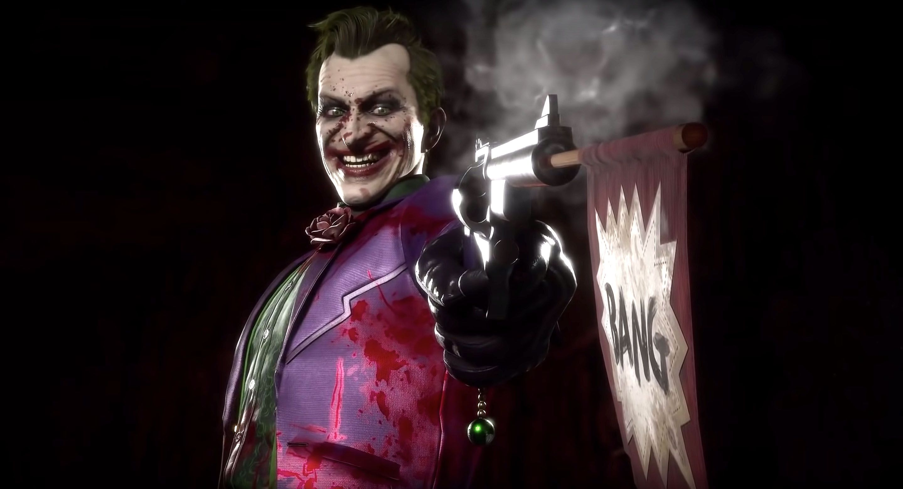
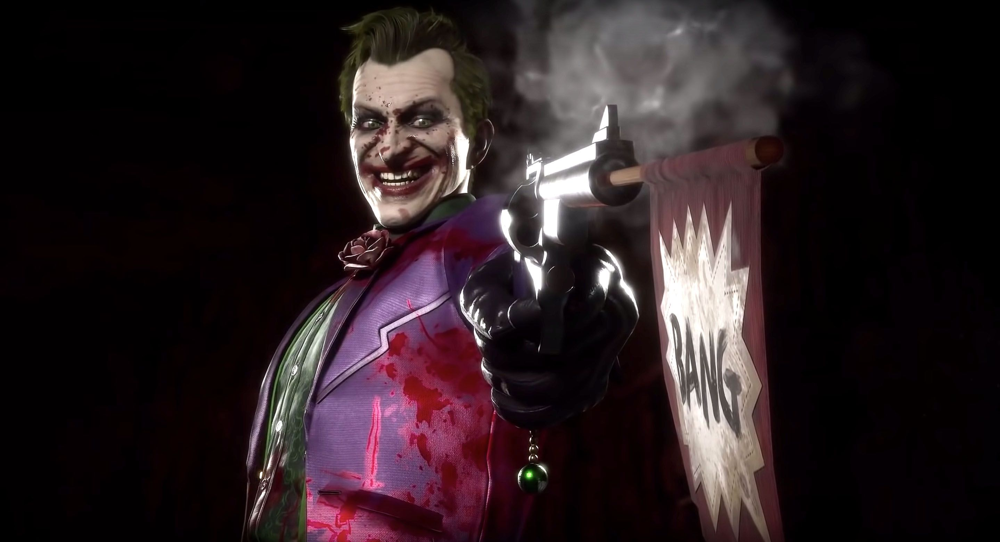

Modo historia completamente nuevo
Mortal Kombat es una franquicia de videojuegos de peleas creada por Ed Boon y John Tobias en 1992. Las cuatro primeras entregas fueron distribuidas por Midway Games y lanzadas principalmente en máquinas arcade; posteriormente estuvieron disponibles en consolas domésticas. Continúa la saga épica a través de una nueva historia cinematográfica que lleva más de 25 años en desarrollo. Los jugadores tomarán el papel de una variedad de personajes pasados y presentes en una nueva narrativa que hace que Raiden se enfrente a Kronika, el Guardián del Tiempo que creó la existencia en los albores de la historia. Ofrece opciones de personalización casi infinitas, brindando a los jugadores más control y brindando una experiencia más profunda y personalizada que nunca. Los jugadores pueden personalizar a sus luchadores con una variedad de Skins, Gear, Habilidades especiales, Intro y Victory Cinemas, burlas y brutalidades que se pueden ganar a través del juego.
Lleno hasta el borde con múltiples modos, incluidas las Torres del Tiempo, que se basa en los juegos anteriores de NetherRealms, lo que permite a los jugadores probar sus habilidades a través de varios desafíos, proporcionando más formas que nunca para continuar la experiencia de Mortal Kombat 11. Elige entre una lista de luchadores con habilidades y Fatalidades únicas, con nuevos personajes, como Geras, un poderoso y leal servidor de Kronika que puede manipular el tiempo, junto con los personajes favoritos de los fanáticos, incluidos Baraka, Raiden, Skarlet, Scorpion, Sonya Blade y Sub-Zero y más. Además de la nueva incorporación "Joker".
 
